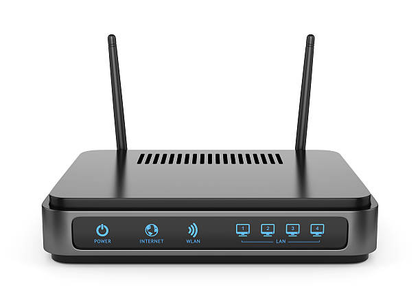

Web Page Design & Computer Peripherals
Modem

A modulator-demodulator or modem is a computer hardware device that converts data from a digital format into a format suitable for an analog transmission medium such as telephone or radio. A modem transmits data by modulating one or more carrier wave signals to encode digital information, while the receiver demodulates the signal to recreate the original digital information. The goal is to produce a signal that can be transmitted easily and decoded reliably. Modems can be used with almost any means of transmitting analog signals, from light-emitting diodes to radio.
Early modems were devices that used audible sounds suitable for transmission over traditional telephone systems and leased lines. These generally operated at 110 or 300 bits per second (bps), and the connection between devices was normally manual, using an attached telephone handset.  By the 1970s, higher speeds of 1200 and 2400 bps for asynchronous dial connections, 4800 bps for synchronous leased line connections and 35 Kbps for synchronous conditioned leased lines were available. By the 1980s, less expensive 1200 and 2400 bps dialup modems were being released, and modems working on radio and other systems were available. As device sophistication grew rapidly in the late 1990s, telephone-based modems quickly exhausted the available bandwidth, reaching the ultimate standard of 56 kbps.
The rise of public use of the internet during the late 1990s led to demands for much higher performance, leading to the move away from audio-based systems to entirely new encodings on cable television lines and short-range signals in subcarriers on telephone lines. The move to cellular telephones, especially in the late 1990s and the emergence of smartphones in the 2000s led to the development of ever-faster radio-based systems. Today, modems are ubiquitous and largely invisible, included in almost every mobile computing device in one form or another, and generally capable of speeds on the order of tens or hundreds of megabytes per second.
Modems grew out of the need to connect teleprinters over ordinary phone lines instead of the more expensive leased lines which had previously been used for current loop–based teleprinters and automated telegraphs. The earliest devices that satisfy the definition of a modem may be the multiplexers used by news wire services in the 1920s. In 1941, the Allies developed a voice encryption system called SIGSALY which used a vocoder to digitize speech, then encrypted the speech with one-time pad and encoded the digital data as tones using frequency shift keying. This was also a digital modulation technique, making this an early modem. Commercial modems largely did not become available until the late 1950s, when the rapid development of computer technology created demand for a method of connecting computers together over long distances, resulting in the Bell Company and then other businesses producing an increasing number of computer modems for use over both switched and leased telephone lines. Later developments would produce modems that operated over cable television lines, power lines, and various radio technologies, as well as modems that achieved much higher speeds over telephone lines.